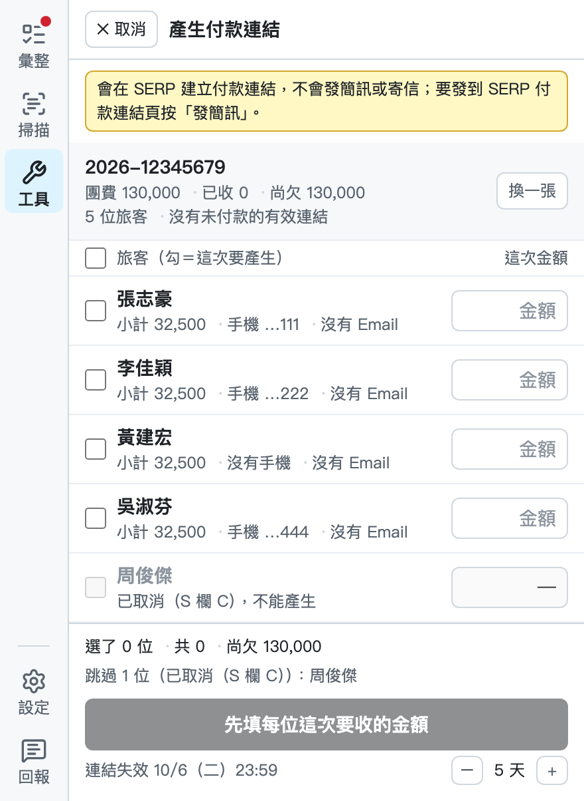
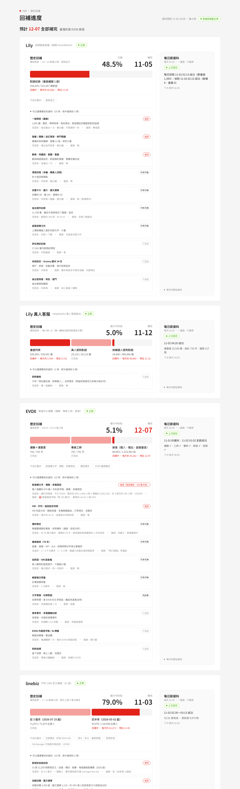
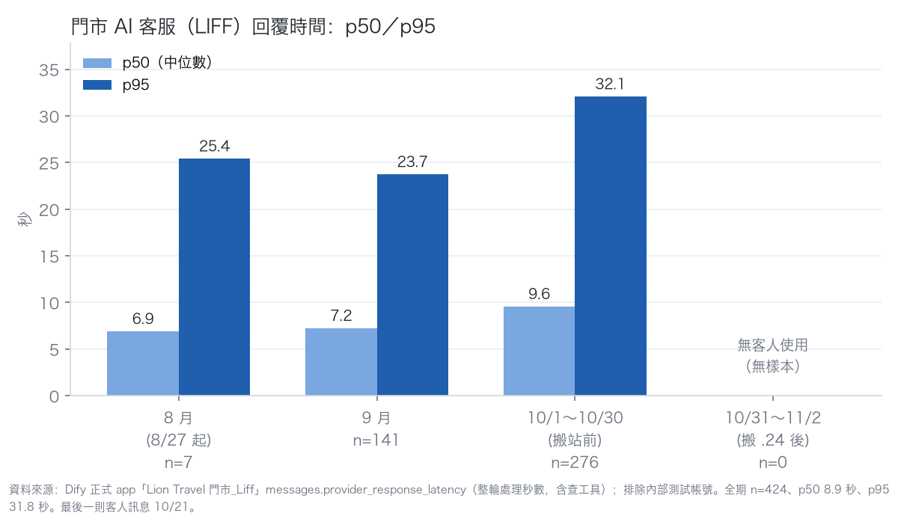

hubertwang
本週 9 張 · 近 6 週只跟自己比，深色＝本週負責 1 個未結案
- CS-25 歐洲地接社-房產品資料彙整
近 4 週落在 11 張
歐洲團產TP 11
FDE 週報 · 2026-W45
資料截至 2026/11/04 09:22（UTC+8）· 實際工時由執行人完工後回填，名詞定義在頁尾
這份報告超過 8 天沒有更新，排程可能沒有成功執行。
從 2026/09/18 第一張完成卡起算，到本期結束。W41 起名單 3→7 人：W39～W40 名單 3 人、有完成卡的 1～2 人，累計數字含這 2 週。
累計跨過名單人數變動（W41 起 3→7 人），前後的週人數不同。
累計工時 之前 本週；各列加總等於工時 KPI，epic 數加總等於總覽專案列表的 epic 數。
進度條 之前完成 本週完成 未完成；幾天沒動＝底下的卡最後一次更新到本期結束（還沒有卡的看 epic 自己），14 天以上標色；點一列看 Kick off 的目標五段。
每段先列進行中（久沒動的在上），再列「卡都做完，epic 沒關」，已結案收在段尾。全部「卡都做完，epic 沒關」10 個；進行中 14 天以上沒動 1 個，「卡都做完，epic 沒關」裡也 14 天以上沒動的 3 個。
以下是改組前在其他專案就已完成、之後才搬進來的卡，只列出，不算進完成卡片、實際工時與進度。
完成 epic ÷ 可運用 7 人週（名單 7 人的工作日合計 35 人日 ÷ 5，已扣國定假日，請假不扣）；epic 在 Jira 結案才算完成，算在最後一張卡做完那週。epic 大小不一，看四週值 · 近 6 週
這張圖看有完成卡的人，把多少時間花在探索。探索是 Kick off 卡的工時，其他完成的卡算開發。每個人先用自己填的工時算出探索占幾成，再把這些人平均，就是柱頂的數字 · 近 6 週
探索 開發
資料品質：本週完成 163 張，有填工時 156 張、未填工時 7 張；近 6 週有 7 個人週的實際工時超過當週可運用，可能填錯（見頁尾資料檢查）
其中專案沒動 4 個、卡沒動 4 張、需要決定 3 個、「卡都做完，epic 沒關」8 個；依幾天沒動排，久的在上。
前三個條件用同一個時鐘：最後一次更新到本期結束，14 天為界。專案沒動＝底下的卡都沒更新；卡沒動＝進行中、本身沒更新；需要決定＝Kick off 的「需要決定」有寫就列，附 Kick off 卡寫了幾天。第四個是「卡都做完，epic 沒關」＝底下算進進度的卡全部完成，epic 在 Jira 還沒結案。
進度條 之前完成 本週完成 未完成；點一列看本週結果與進行中的卡。
轉檔華航促銷與長榮福岡點放最新票價，並讓票價試算表支援清除舊版本與退回上一版。
本週沒有完成項目
本週沒有完成項目
完成集客表範本與產出流程，新增催行與人數合計欄位，房產大表程式改成程式庫並接上使用紀錄，操作說明也改為共用試算表。
建立年度票價日曆儀表板，轉檔長榮與星宇舊年度表並標記新改價格，完成年度表改版比較與調價公告天數分析。
本週沒有完成項目
完成版本盤點與修改重套、換版驗收，並將正式站搬遷到新主機，同步修正自動開新對話與客服記憶等問題。
完成取號服務開發與多項風險修正，推播改為卡片並完成端到端實測，再搬遷到雲端正式子網域、開出測試門市。
停用對話記錄寄信並改為下載長圖，新增往上捲動載入歷史訊息，程式碼也已推上公司 repo。
本週沒有完成項目
完成聊天 Log API 開發，將訊息回補與時間校正接進每日排程，並建置回補線進度總覽頁。
本週沒有完成項目
調查業績歸屬機制並盤點門市業務接單設定，繪製流程圖定下改造方向，並完成業務員編帶入官網旅客頁的驗證實測。
找出 F5 擋字元的碼位範圍並驗證連線逾時已解除，再次確認門市 LINE 訊息已無漏收。
門市班表已上線到正式站，匯入門市範圍也已擴大。
本週沒有完成項目
本週沒有完成項目
在測試站演練批次建帳號，並從 SERP 員工資料查出門市店員名單。
完成匯入服務轉移與本機環境搭建、CPU 相容性調整，優化匯入流程與結果預覽，並修正訂單取消列與格式問題。
完成使用者實機 UAT 與操作時間成效驗證，服務轉移到本機環境並修正相容性問題，也讓 ERP 改用具名分頁保留多張單掃描結果。
完成部署準備與提案入口。
完成飯店整合資料庫與地接社反饋閉環。
完成票規、文字分頁與航變公告的結構化整理，查證內容疑點，並建立共用表彙整待確認問題與後續維運做法。
完成旅展前的實機走查。
本週沒有完成項目
重啟話務原始資料每日收集與歷史回補，排除擋 IP 改經雲端服務轉發，並強化錄音存檔服務。
本週沒有完成項目
完成法人付款人單的讀單放行與被擋原因提示，金額欄也已改為不預填。
本週沒有完成項目
本週沒有完成項目
完成線控團體新增車帶 TL 操作入口、導領聯絡資訊自動擷取與車次資訊自動填寫存檔，並加上存檔驗證與執行結果通知。
本週沒有完成項目
新增取消簽核、修改聯絡單與簽核驗收工具，建置登入介紹頁並延長登入期限，同步修正聯絡單主旨截斷問題。
修復硬碟寫滿導致的測試站停擺並加上防呆，升級自動化流程平台並恢復服務，同步備份公司金鑰並建置容器管理介面。
本週沒有完成項目
已將飯店資料 API 調整為企業版自動化流程平台。
本週沒有完成項目
完成越南簽證主文件試做，以及 wise 一鍵匯出與半自動匯入。
完成 Lily 後台每日抓取與歷史回補，並開發真人客服後台每日抓取與回補，擴充為全量資料分表存放。
梳理地接對團表作業規則並產出自動化測試版對團表，交付線控試用並收集回饋，同步完成挪團與主子團的判斷邏輯。
本週沒有完成項目
本週沒有完成項目
本週沒有完成項目
本週沒有完成項目
本週沒有完成項目
累計 21 張 · 累計工時 72.5h
負責中 1 個
累計投入比例：歐洲團產TP 100%
累計 24 張 · 累計工時 86h
負責中 4 個
累計投入比例：票務 53%、東北亞 26%、未分類 21%
累計 66 張 · 累計工時 175.25h
負責中 6 個
累計投入比例：東北亞 100%
累計 107 張 · 累計工時 45.95h
負責中 2 個
累計投入比例：直售 50%、FDE_team 21%、LiLi 20%、IT_team 9%
累計 38 張 · 累計工時 78.5h
負責中 6 個
累計投入比例：客製國旅 97%、入境 3%
累計 31 張 · 累計工時 42.25h
負責中 6 個
累計投入比例：國旅 62%、入境 38%
累計 399 張 · 累計工時 231.75h
負責中 20 個
累計投入比例：門市 80%、雄獅 9%、直售 8%、AILab 2%
這些卡在 Jira 上沒有 assignee，工時算不到人。
累計 1 張 · 累計工時 0h
負責中 0 個
無
累計投入比例：LiLi 100%
已交付 9 個專案，服務 4 個單位；本期新交付 2 個；另有 4 個驗收中（直售、門市）。

共 3 張批次付款連結支援企業單（法人付款人 P）本期新交付企服與差旅業務在 SERP 業務彙整的「工具」打一張有法人付款人的單，照樣列出每位旅客、金額由業務逐位填，按一次替每位旅客各產生一條刷卡付款連結企服業務每人每 30 天出發的單，替每位旅客開完付款連結的時間（分鐘）約 4 分鐘（用工具，推估） 11/03 量測原本約 55 分鐘（每人 109.2 位 × 手動每條 30 秒）驗收通過 1/5 項・11/03 交付完整說明
門市 LINE OA 資料歸戶（需求單 26100566）linebiz-sync（每日增量、近三個月回補、歸戶表、內網進度網頁、Chatwoot 補登與時間校正的每日步驟，.24 共用 Airflow）；Chatwoot 往上捲依時間載入歸戶到 LINE 會員編號的人數（Chatwoot 補登與晚到訊息見其他成效）280,469 人 11/03 量測原本278,366 人驗收通過 2/2 項・驗收中完整說明report.md
這些檔案沒有放上週報，點檔名到 Jira 看（要登入）

Dify 平台與維運 階段二：升級與優化10/09 兩站原地升 1.17.1；10/10 上長對話整理；Weaviate 升 1.39.2 並清孤兒向量；MCP 工具清單重抓並備份；10/31 升 1.18.0（fork 自建映像 3 個減為 2 個，web 改官方映像，Langfuse 修改退休）；10/31 正式站從 .9 搬到 .24（公司網域、只限內網，測試站留 .9）；LIFF 找不到對話時自動開新對話正式站 AI 回應時間 p50／p95（秒）：Dify 一輪從收到問題到答完，含查 MCP 工具，不含 LIFF 網路與畫面搬站後無客人樣本，待真實使用後補（11-03 查 .24 正式站排除內部帳號仍 0 則） 11/03 量測原本p50 8.9 秒／p95 31.8 秒（搬站前全期 8/27～10/21，n=424）驗收通過 3/4 項・驗收中完整說明